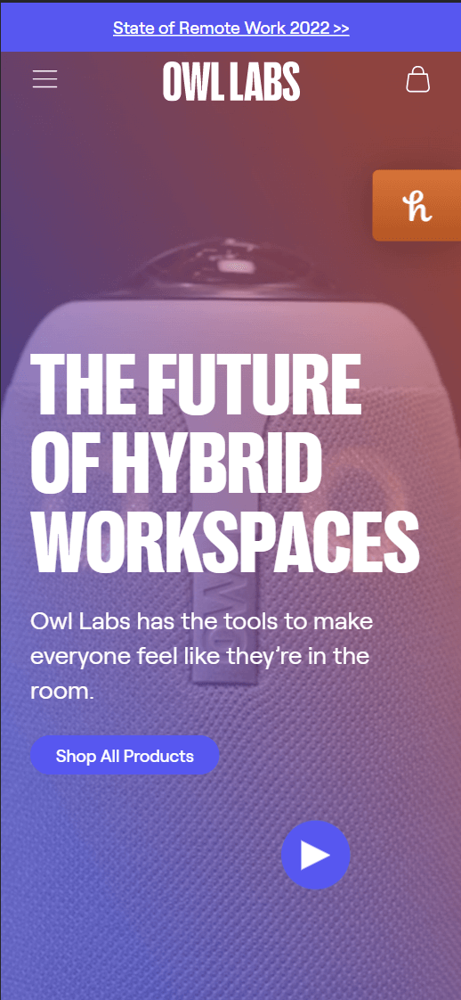
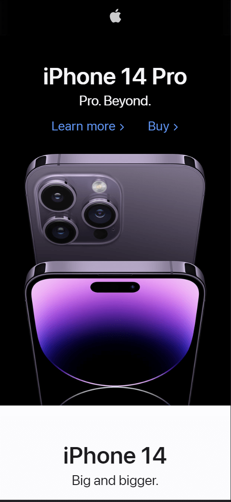
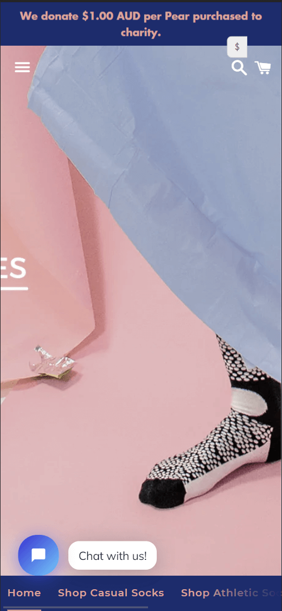

White Space
Owl Labs
The main reason that I picked owl labs as my example of white space was becasue of the minimalistic style of their home page. I really love how they keep the background simple with just a picture that isn't too distracting.
Visual Hierarchy
Apple Inc.
I decided to go with apple for the visual Hierarchy. The main reason for that is because of their text sizes and icon sizes. The largest things are what they want your eyes drawn to first. In this example, you will see 'Iphone 14 Pro' is the most important thing they want you to see on the page. That is becasue it is describing what is in the picture.
Contrast
Odd Pears
The website that I picked for contrast was Odd Pears. This website does a very good job with their color contrast. They were able to incorporate fun interesting colors and still make things easy to read. The fact that they have pink text that is still readable is really interesting to me. Overall, really good example of color contrast.